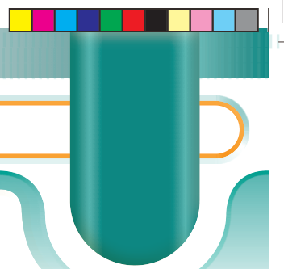

Chapter Four
Algebra
Introduction
Skills in solving problems systematically, logically, and making connections between variables are essential in daily life. Such skills can be developed and applied by learning algebra. In this chapter, you will learn about binary operations, quadratic expressions, and solving quadratic equations. The competencies developed will enable you to solve daily life problems such as budgeting, comparing prices, planning for a journey and figuring proportions in cooking. Also, algebra is useful in other subjects and fields such as science, engineering and technology and many other applications.

Think
The role algebra plays in real life.
Binary operations
A binary operation is a rule for combining two quantities to produce a unique quantity from the same set. It makes use of symbols that represent one or more operations.
The symbols used in binary operations are not standard, this means, they do not represent a specific operation. A symbol may be used in a certain operation in an expression, and yet have a different meaning in another expression.
A binary operation may be denoted by symbols such as Δ and *, depending on the instructions given for the operation.
The instructions may be given in words or by symbols. Binary operations may involve the basic arithmetic operations such as addition (+), subtraction (−), multiplication (×), and division (÷) depending on the given definition. Engage in Activity 4.1 to learn more on binary operations.